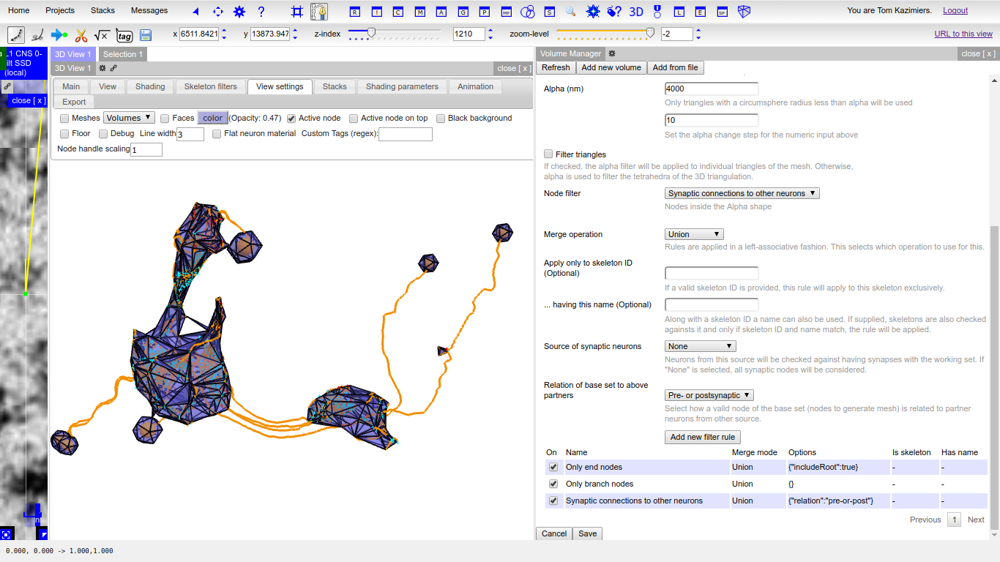

Volumes¶
Besides skeletons CATMAID can also generate and display 3D meshes, which it calls volumes. At the moment the support is basic, but can be useful already. They are arbitrary triangle meshes or polyhedra, stored as PostGIS data for fast access. Volumes are associated to projects and can currently not be shared between them without data duplication.
The 3D Viewer’s “View settings” tab allows to mark known volumes as visible. Checkboxes for individual volumes are accessible from a drop down menu. If a volume becomes visible, it takes the currently selected opacity and color from the color selector close to the drop down menu. If the “Faces” option is selected, filled triangles are displayed rather than a wireframe.
And since CATMAID’s 3D viewer supports a textured Z plane, the volume’s intersection with an image stack can be visually inspected as well. However, there is not yet a way to show volumes as a layer in a stack viewer.
Volumes are also accessible from the Volume Manager widget, which can be opened with the help of the 3D cube icon in the Tracing Tool’s button panel. It shows all available volumes and some meta information on them. Double clicking table entries allows users to edit basic information, like its name. Additionally, the volume’s bounding box is displayed on top of the image data of the active stack viewer. The mesh itself is not editable from CATMAID’s web-client at this point.
The volume widget also provides means to generate new volumes based on neurons, synapses or simply as a bounding box. The sub-sections below provide some detail on this.
Besides display, CATMAID can currently use volumes only to warn if nodes are created outside of them. This is useful, for instance, if one wants to constrain neuron reconstruction to a given compartment. To select a volume for which warnings should be generated open the settings widget and open the section called “Warnings”. If a volume is selected from the drop down menu, warnings will be generated for the current session.
Volume generation¶
In CATMAID, volumes can either be added through the volume manager or directly through the HTTP API.
Volume manager¶
Pressing the “Add new volume” button brings up a user interface to generate and add new volumes. The first thing to do is to select the new volume’s type, available are bounding box, convex hull and alpha shape. The first is simply an axis aligned box, previewed in the tracing layer. After configuration, “Save” can be pressed to store the volume on the server. Bounding boxes are currently the only volumes that can be edited after they have been created.
The remaining two volume types require a point set to operate on and can be previewed in the 3D viewer (it will take the first one open). For both a skeleton source can be selected on which different filters can further constrain the set of treenodes that are actually used. This es especially useful if a compartment is already reconstructed and a convex or concave hull describes it reasonably well. The skeletons’ treenodes can be used create volumes. Alternatively, one can create new dummy neurons for the sole purpose pf volume generation by roughly outlining a compartment.
Skeletons can contain a lot of treenodes. Therefore, to reduce computation costs, and to provide more flexibility it is possible to apply filters to the input set of treenodes (coming from the selected skeleton source). One could for instance select only branch nodes, roots or connectors. It is possible to add multiple filters at the same time. All filters work on the nodes of the skeletons provided by the selected source. The results of all filters are combined with, optionally different, set operations. A union merges both results and takes all; an intersection only allows what is in both sets. This happens in a left associative fashion (or, here, since a table representation is used, “top associative”). Each filter operates on the same set of input nodes and only their combination creates the final result. By default, if no filter is used, all nodes from the input skeletons are used.
To add a filter, select the type, configure it through the settings below the type selection and press “Add new filter rule” and continue with the next filter.
An example: Add an “Only branch nodes” filter and then select a new type, say Synaptic connections to other neurons and select a merge operation . For synaptic connections, you now can select the partners (or choose None for any partner) and the type of relation that is required. After the second filter is added, you have a point set of branch nodes and connector nodes. Now you can go ahead and adjust the actual volume properties, e.g. the alpha value (to filter out particular tetrahedra, or optionally triangles).
Pressing the “Add new volume” button will generate the mesh. Keep in mind that volumes are materialized after they are created and currently can’t be edited after creation. The screenshot below is taken during the volume generation using alpha shapes on a set of filtered skeletons. It shows a preview from the Volume Manager and as can be seen, disconnected meshes are supported as well.
API¶
If wanted, volumes can also be created outside of CATMAID and then loaded into into it through its HTTP API. As long as it is possible to represent them as a generic triangle mesh, loading them into CATMAID should be easy. The HTTP endpoint to use is:
/{project_id}/volumes/add
For more details on the API itself, consult the API documentation,
which is available under /apis on every CATMAID instance.
To store a volume through the API, you have to create a POST request which contains the fields “type” (set to “trimesh”), “title” (a representative title) and “mesh”. It is expected to be a string that encodes two lists in JSON format: [[points], [triangles]]. The list of points contains lists of three numbers, each one representing a vertex in the mesh. The array of triangles also contains three element lists as items. Each one represents a triangle based on the points in the other array, that are referenced by the triangle index values. For instance, this would constitute a valid set of fields for the creation request:
title: "Example mesh"
type: "trimesh"
mesh: "[[[0,0,0], [1,0,0], [0,1,0], [1,1,0]], [[0,1,2], [1,3,2]]]"
If everything went well, the endpoint should return a response with two JSON fields: “success” (should be true) and “volume_id”, which holds he ID of the newly created volume.
If you have an API token generated for your CATMAID user, you could also use
curl, to load the mesh from a JSON file (having the fields above):
curl -X POST -d @<json-file> <catmaid_url>/<project_id>/volumes/add \
--header "Content-Type: application/json" \
--header "X-Authorization: Token <api-token>"
where <catmaid_url> is the URL of your CATMAID instance, <json-file> being the file path to a JSON file representing the data to send (see above), <project_id> is the project ID (visible when creating a link to a view) and <api-token> being your API token.

{kind=link}